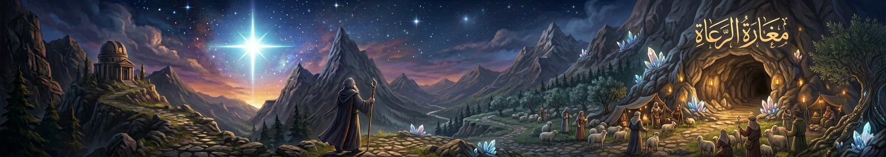

"في كل حكاية.. فلسطين"
أسطورة النجم الذي لا يختفي
يُحكى أن نجمًا عظيمًا ظهر في سماء بيت لحم في ليلة تاريخية، لكنه لم يكن نجمًا عاديًا. كان الناس يقولون إنه لا يغيب تمامًا، بل يختبئ خلف الغيوم ليعود في اللحظات التي يحتاج فيها الناس إلى الأمل. وكان بعض الرعاة يقسمون أنهم رأوه يتحرك ببطء فوق التلال ثم يختفي عند الفجر.
أسطورة كهف الميلادة
حول كنيسة المهد، انتشرت حكايات شعبية تقول إن الكهف الذي شهد حدث الميلاد ليس مكانًا عاديًا. كان الناس يعتقدون أن الكهف يحتفظ ببركة خاصة، وأنه في ليالٍ هادئة جدًا يمكن سماع همسات خفيفة أو شعور بدفء غامض يملأ المكان، وكأن الزمن يتوقف داخله.
أسطورة شجرة الزيتون الحارسة
في أطراف المدينة، كانت توجد شجرة زيتون قديمة جدًا، يقال إنها شاهدت أحداثًا لا تحصى. وكان الأهالي يعتقدون أن هذه الشجرة “تحرس” المدينة، فإذا اقترب خطر من بيت لحم، تهتز أوراقها رغم عدم وجود رياح، كأنها تنبه الناس.

أسطورة مغارة الرعاة
في أحد التلال القريبة، توجد مغارة ارتبطت بحكايات الرعاة القدماء. ويُقال إن الرعاة الذين كانوا يبيتون فيها كانوا يرون أضواءً لطيفة لا تُشبه النار، وأصواتًا تشبه التراتيل البعيدة. ومن يدخلها بقلب خائف، يشعر بالضياع، أما من يدخلها بطمأنينة فيجدها دافئة ومضيئة.